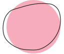
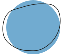

Écouter. Créer.
Temps de faire une pause
pour vous (re)connecter
à votre créativité
Notre environnement de travail est en pleine mutation avec une demande croissante en agilité et résilience. La technologie est par ailleurs omniprésente et malgré tous ses avantages, elle peut être oppressante. Ces intrusions incessantes étouffent la conscience et bloquent le flow de la créativité.
La reconnexion à soi est essentielle. Elle favorise la créativité qui, par son épanouissement et son expression, contribuera au futur de l’entreprise et à créer du sens dans nos vies professionnelles.

Wonderflow, c'est quoi?
Des ateliers ludiques et originaux pour enforcer votre confiance créative dans votre milieu professionnel. Abordez la créativité différemment!

Pour qui?
Les ateliers Wonderflow s'adressent à tout gestionnaire ou leader qui souhaite développer sa confiance créative.
Pour quoi?
Se (re)connecter à sa créativité.
Apprendre des stratégies pour faire émerger de nouvelles idées et
des solutions à vos problématiques.
Repartir avec des outils pour faire de sa créativité un état
d'esprit quotidien.
